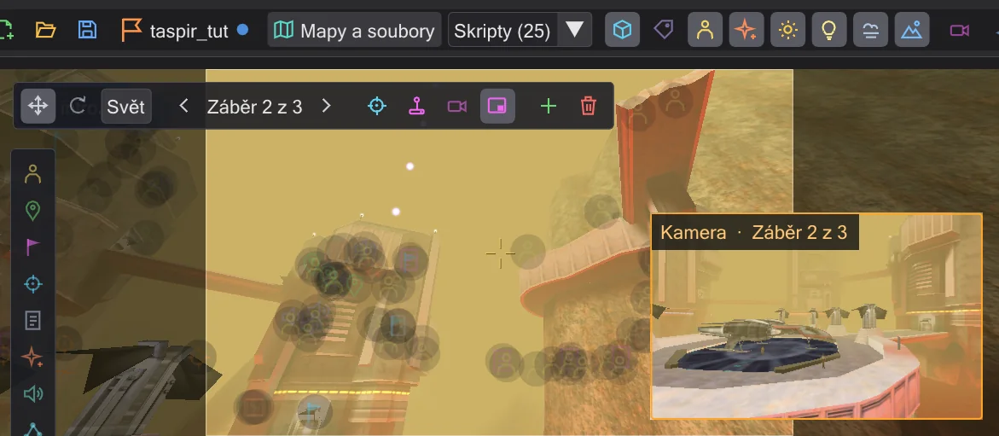
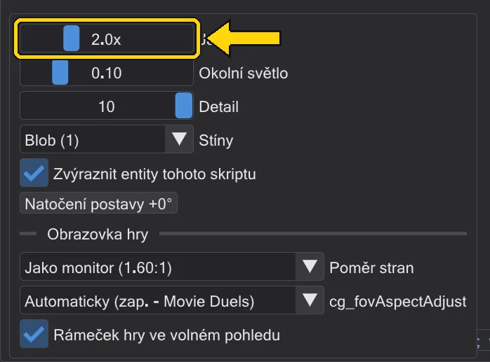

Mapa
Mapa ve 3D, kreslená tak, jak ji kreslí hra - se světly, září, mlhou, efekty a postavami skriptu.

Otevření mapy#
Přepněte na Mise v liště režimů. Mise si mapu přinese s sebou (Mise). Bez mise otevře Mapy a soubory mapu z disku nebo z .pk3, nebo načte samostatný soubor .ent. Skripty (N) vypíše skripty, na které ukazují entity mapy - vyberte jeden a načtete jeho animační sekvenci.
Pohyb#
| W A S D (myš nad pohledem) | Let; Q / E dolů a nahoru, Shift rychleji |
| Tažení pravým tlačítkem | Rozhlížení |
| Tažení prostředním tlačítkem | Posun |
| Alt + prostřední tlačítko | Kroužení |
| Kolečko | Přiblížení |
| Dvojklik na entitu v seznamu | Přeletět tam |
| Ctrl + 1 ... 9 | Uložit pohled; 1 ... 9 skočí zpět (pro každou mapu) |
Co se zobrazuje#
Tlačítka vpravo na liště zapínají a vypínají části obrazu: entity, názvy, postavy skriptu, efekty, záři, dynamické světlo, mlhu a oblohu. Pohled shora se dívá přímo dolů jako mapa a odřízne vše nad výškou řezu - tažením políčka výšky se podíváte na jiné patro. Nastavení zobrazení (ozubené kolo) obsahuje jas, okolní světlo, detail, stíny postav, Zvýraznit entity tohoto skriptu, které ztlumí každou entitu, kterou aktivní skript nepoužívá, a Obrazovka hry: poměr stran hry a cg_fovAspectAdjust, které rozhodují, jak široce každá kamera vidí (Náhled a pohled kamerou).

r_DynamicGlow - na mapě, na brush entitách a modelech, na zářících částech postav jako oči droidů, na efektech jako oheň a jiskry a kolem čepelí světelných mečů), mlha (r_drawfog), dynamická světla, odlesky čočky, tráva, keře a cákance deště na zemi (surfaceSprites - stéblo po stéblu tam, kam je dává hra, kývající se a se vzdáleností mizející, i na brush entitách jako zeď, která se objeví, když je použita; cákance deště jen když prší), počasí (v Movie Duels i láva z fx_lava) a stopy, jiskry a spáleniny mečů (Světelné meče: zdi a střety). Zbraně, lékárničky, štíty a munice leží tam, kam je hra pokládá (předměty s targetname se objeví, až když jsou použity), a podlahové nabíjecí stanice, bezpečnostní panely, nástěnné kamery, věže, stacionární zbraně, E-Weby, strážní děla a iontové dělo stojí s modely, které jim dává hra (bez hráče nemíří ani nestřílejí; strážní dělo se rozloží sekundu po startu mapy nebo po zapnutí a pak se pomalu otáčí ze strany na stranu jako strážní dělo hry bez cíle, a iontové dělo střílí samo - nebo po use - se zábleskem z hlavně a zpětným rázem, ve dvojnásobné velikosti modelu jako ve hře); laserové miny visí na své zdi a po zapnutí kreslí svůj paprsek a bzučí (s varovným zvukem při aktivaci); skript nebo trigger je zapíná a vypíná, paprsek se zastaví na dveřích a jiných pohyblivých částech tam, kde v tu chvíli jsou, na jiných laserových minách a na pevných rozbitných modelech, a postava, která vejde do paprsku - nebo jen zbraň v její ruce - minu odpálí - výbuch, pak mina zmizí; jako tlakové poškození ve hře zraňuje postavy poblíž (čím blíž, tím víc; ne skrz zdi) a postava, které dojde zdraví, zemře jako ve smrtící oblasti (Postavy a dráhy); jako ve hře mina použije své cíle, takže dveře, zdi nebo počítadlo za ní se přepnou a skripty za ní se spustí (usescript počítadla, spouštěč skriptu) - s jedním počtem pro skripty a movery. Explodující mina odpálí i zapnuté miny poblíž (miny zavěšené blízko sebe vybuchnou spolu). Postavy ukazují každou vrstvu svého shaderu - lesk, chrom (i na zbrani nebo jílci meče v ruce, otáčející se s postavou jako ve hře), tónované části jako nátěr bitevních droidů, černá hledí klonových vojáků, blikající a animované vrstvy, pohyblivé vrstvy textur (tcMod) jako třpyt Imperátorova hologramu a povrchy, které jejich shader pohybuje pomocí deformVertexes wave, bulge nebo move, jako kouř kolem stínového Yody (md_yoda_shadow). Efekty se kreslí také s každou vrstvou svého shaderu - výbuch prolíná své dvě animované vrstvy jako ve hře a každá vrstva, včetně první, přebírá barvu a mizení částice jen tam, kde to její shader žádá (rgbGen vertex, alphaGen vertex); jinak ukazuje svůj obrázek, jak je, jako hra; obrázek efektu bez skriptu shaderu se kreslí jako vestavěný shader hry pro něj - prolnutý podle své alfy s barvou a mizením částice a viditelný skrz zdi. Modely, které efekty nesou (useModel, jako cáry mlhy na duel_exegol), se kreslí také a otáčejí se ke kameře, kde jejich shader říká deformVertexes autosprite. Paprsky fx_target_beam střílejí ke svému cíli jako ve hře, i když je skript nebo trigger zapíná a vypíná (jednorázový paprsek vystřelí jednou na použití); každý výstřel míří tam, kde cíl v tu chvíli je - paprsek na jedoucím vlaku ho sleduje -, zastaví se na dveřích, pohyblivých částech a postavách v cestě a znovu zapnutý paprsek vyčká svou pauzu (wait) jako hra. Statistiky ukáže snímkovou frekvenci, textury a hodnoty grafické karty, když něco vypadá špatně.